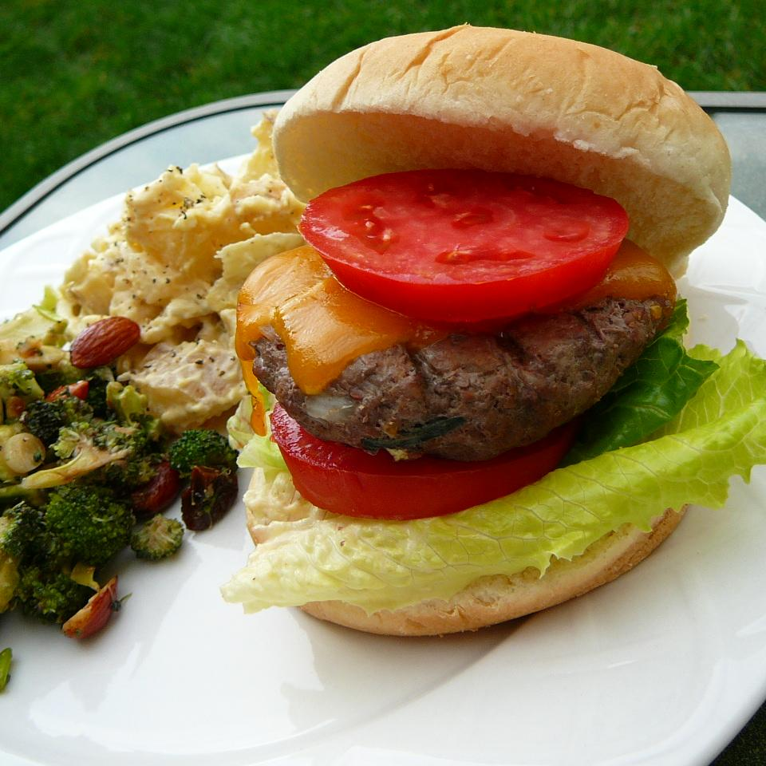

Cheeseburger

these burgers are perfect for a summer bbq. Enjoy with plenty of ketchup!
- 2 lbs beef sirloin
- .5 onion grated
- a Tablespoon Grill Seasoning
- 1 Tablespoon Liquid Smoke
- 2 Tablespoons Worcerstershire Sauce
- 2 Tablespoons minced garlic
- 1 Tablespoon Adobo Sauce from Canned Chipotle Peppers
- Salt and Pepper to Taste
- 6 (1 ounce) slice sharp cheddar cheese (Optional)
- 6 Hamburger Buns
Steps:
- Preheat Grill
- Combine ground sirloin, onion, grill seasoning, liquid smoke,
Worcestershire sauce, garlic, adobo sauce, and chipotle pepper in a large bowl.
Form the mixture into 6 patties. Season with salt and pepper.
- Place burgers on preheated grill and cook until no longer pink in the center.
Place a slice of Cheddar cheese on top of each burger one minute before they are ready.
Place burgers on buns to serve.